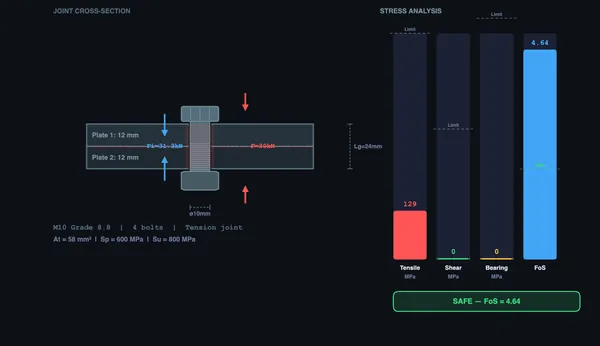

Bolt Torque & Preload Calculator
Tensile & Shear Stress • Preload • Factor of Safety — Simulate • Explore • Practice • Quiz
Display Controls
Σ Live equations — values substituted from current state
💡 What-if coach — insights from current values
1 Overview
The Bolt Torque & Preload Calculator analyses the stress state, tightening torque and factor of safety for bolted connections in both the metric and the inch standards. It covers bolt preload (clamping force), tightening torque and its reverse, bolt stretch, tensile stress along the bolt axis, shear and bearing stress for transverse loading, and slip resistance for friction-grip joints.
The catalogue holds 58 sizes and 15 grades. In SI: ISO metric M3–M36 coarse pitch and thirteen fine-pitch sizes, with the nine ISO 898-1 property classes 4.6, 4.8, 5.6, 5.8, 6.8, 8.8, 9.8, 10.9 and 12.9. In Imperial: Unified inch 1/4″–1-1/2″ in UNC and UNF, with SAE J429 Grades 1, 2, 5 and 8 plus the ASTM F3125 structural grades A325 and A490. Stress areas come from ISO 898-1 Tables 4 and 7 and from the ASME B1.1 formula, and every value is re-checked against its source by a script before release.
Preload is what makes a bolted joint work: it keeps the clamped members in compression, stops the joint separating under external load, and is the main reason a bolt survives cyclic loading. The target is a fraction of the proof load Fp = At × Sp — 90% for a permanent connection and 75% where the joint will be dismantled and re-tightened. Both are selectable.
2 Setting Up the Joint
The simulator opens in Simulate mode with an M10 grade 8.8 bolt, a 4-bolt tension joint, a 30 kN external load, 12 mm plates and a 90%-of-proof preload target. The canvas shows a cross-section of the joint with force arrows and stress zones on the left, and a stress-versus-limit bar chart on the right.
Set the Bolt Size — each size carries its own tensile stress area At, which accounts for the reduced section at the thread root. Set the Thread series (coarse or fine in metric, UNC or UNF in inch): a fine thread has a larger stress area for the same nominal diameter, so it is stronger in tension and more resistant to loosening, at the cost of being easier to cross-thread. Then set the Grade.
Three grades in this catalogue change strength with diameter, and the tool switches rows for you — the cross-section caption always shows which Sp is actually in use:
- ISO 8.8 splits at 16 mm: 800/640/580 MPa up to M16, 830/660/600 MPa above.
- SAE Grade 2 splits at 3/4″: 55 ksi proof below, 33 ksi above.
- SAE Grade 5 splits at 1″: 85 ksi proof below, 74 ksi above.
The grade menu also filters by size: class 9.8 is specified only to M16 and vanishes above it, and A325/A490 appear only from 1/2″ up. A325 deliberately does not split — ASTM F3125 levelled the large diameters up to match the small ones, so the 105 ksi row still printed on many charts no longer applies.
Adjust External Load (1–500 kN), Number of Bolts (1–12) and Plate Thicknesses (3–50 mm each; their sum is the grip length Lg). Choose the Joint Type: Tension, Shear or Combined. Use the Presets (Flange Joint, Bracket Mount, Pressure Vessel, Structural Joint) to load a realistic configuration in one click.
3 Tightening — Preload, Torque and Stretch
The Tighten by switch runs the tightening relation T = K·d·Fi in whichever direction you need:
- Preload target. Set the clamping force you want as a percentage of proof load (40–95%). The tool reports the torque required to reach it.
- Torque spec. Enter the torque your drawing or wrench specifies (1–2000 N·m). The tool solves Fi = T/(K·d) and reports the preload you actually get, together with the Preload / Proof percentage — which turns red once the torque drives the bolt past its proof load.
The Nut Factor K selector is what connects the two, and it is the largest uncertainty in the whole calculation: 0.15 lubricated, 0.18 cadmium plated, 0.20 plain steel as received, 0.25 zinc plated. Only about 10–15% of applied torque actually stretches the bolt; the rest is spent on friction. Because of that, the torque method holds preload to roughly ±25% — the What-if coach spells out the resulting range for your current settings.
Bolt Stretch (δ) is the readout to trust when preload really matters. Since the bolt is a spring of rate kb = AtE/Lg, its extension is δ = Fi/kb — typically 0.05 to 0.15 mm. Measured with a depth micrometer or an ultrasonic gauge, it bypasses friction entirely.
4 Reading the Results
Preload-aware bolt force. Unlike a naive “load ÷ bolts” estimate, the simulator models the joint as two springs in parallel: the bolt force is Fb = Fi + C·P, where C = kb/(kb+km) is the load ratio and P the external load per bolt. Member stiffness km uses the Wileman finite-element fit for steel members. Because C is usually only 0.15–0.35, a preloaded bolt absorbs just a small fraction of each load increment.
Four different safety measures are reported, and a joint can pass one while failing another:
- Factor of safety = Sp / σ — the margin against the stress present right now. For combined loading the von Mises equivalent σeq = √(σ² + 3τ²) is used.
- Separation factor n0 = Fi/[P(1−C)] — how many times the load could grow before the members lift apart. Usually the governing check on a sealed flange.
- Load factor nL = (Fp−Fi)/(C·P) — how many times it could grow before the bolt reaches proof.
- Fatigue FoS nf — a Goodman check for an external load cycling 0 → P, using the fully corrected endurance strength of a rolled thread (129 MPa for class 8.8, 162 for 10.9, 190 for 12.9). Cut threads are roughly 30% worse and this figure would not apply.
An infinity symbol on any factor means the joint puts no demand on that mechanism at all — for example, no external load, so nothing to separate.
5 Shear Joints — Bearing vs Friction Grip
Selecting Shear or Combined reveals three extra controls, because a transverse joint has design decisions a tension joint does not:
- Shear Plane. Through the plain shank the resisting area is πd²/4; if the thread runs into the joint the plane cuts the thread and you must use At instead — on an M10 that is 26% less area.
- Shear Planes. Single shear (a lap joint, one plane) or double shear (a butt joint with cover plates, two planes, half the stress). Bearing stress is unaffected, because the centre plate still carries the whole per-bolt load against its own thickness.
- Slip Factor μ. 0.20 painted, 0.30 clean mill scale, 0.40 blasted, 0.50 grit-blasted Class B.
The tool then reports Slip Resistance = n·ns·μ·Fi and a Slip Factor. In a properly preloaded friction-grip (slip-critical) connection the plates never move, so the bolt shear and bearing stresses are reserve capacity rather than the design condition. Once the applied load exceeds slip resistance, the coach says so and those stresses become the real check.
6 Explore, Practice & Quiz
Explore mode covers 13 concepts in three categories: Bolt Basics (anatomy, thread types, grades, tensile stress area), Stresses (tensile, shear, bearing, preload) and Design (factor of safety, joint stiffness, tightening torque, bolt stretch, bolt fatigue). Each concept has a diagram and a worked example.
Practice mode generates random problems from 14 templates — stress area, tensile stress, preload, factor of safety, shear, bearing, proof load, stiffness ratio, grade markings, tightening torque, preload from torque, bolt stretch, slip resistance and load factor. Enter your answer, click Check, and review the step-by-step solution. Your running score is tracked.
Quiz mode presents 5 randomised questions from a pool of 20, mixing multiple choice and numeric answers. Your score and a detailed review appear at the end.
7 Design Notes & Shop Tips
- Always use the tensile stress area At, not the nominal bolt area, for stress in a threaded section.
- Grade 8.8 means UTS = 800 MPa and yield = 640 MPa; grade 10.9 means UTS = 1040 MPa and yield = 940 MPa (the nominal 1000/900 from the marking is rounded down from the standard).
- Preload is 90% of proof for a permanent joint, 75% for one that will be re-tightened. Under-tightening leads to separation and fatigue; over-tightening risks yield during assembly.
- Never lubricate a thread without recalculating the torque. Dropping K from 0.20 to 0.15 raises the preload from the same torque setting by a third; going to a waxed or anti-seize thread can double it.
- Where preload genuinely matters, specify bolt stretch or turn-of-nut angle, not torque.
- For shear joints, friction-grip connections resist fatigue far better than bearing-type ones — but only while the preload survives.
- Adding bolts cuts the load per bolt but needs care with spacing, or the plate fails between the holes.
- Compare the Flange Joint and Bracket Mount presets to see how joint type changes which stress dominates.
8 Interface, Units & Export
- Steppers. Every numeric input (preload target, applied torque, load, number of bolts, plate thicknesses) is a single [−] [value] [+] control: click to nudge, hold to sweep, use ↑ / ↓ while the value is focused, or just type a number. The value cell fills in proportion to where the value sits in its own range, so you can read the setting at a glance without a separate slider. A button greys out once the field is at its limit, and one press-and-hold counts as one undo step. The external-load range reaches 500 kN.
- Units follow the standard. The inputs convert with the unit toggle, so in Imperial you set the load in kip and the plates in inches; the [+] and [−] buttons step onto the grid rather than merely along it, so a plate carried over from metric lands on a real 1/16 in size on the first press. The grip length is shown live beside the two plate inputs that produce it.
- SI / Imperial — a standard switch, not just a unit switch. The Units toggle moves the whole joint between the ISO metric catalogue and the Unified inch catalogue, carrying the size and strength class across to their nearest equivalents (an M20 grade 8.8 lands on 3/4″–10 UNC SAE Grade 5). Results switch between kN/MPa/mm/N·m and kip/ksi/in/lbf·ft. The engine computes in SI throughout, whichever catalogue is on screen. Loading a preset returns the tool to metric, since the presets are metric configurations.
- Show Calculations. The calculator button on the diagram opens a step-by-step derivation — stress area, proof load, preload or torque, stiffness and load ratio, bolt stretch, bolt force and stress, separation and load factors, fatigue, and factor of safety — typeset in classical notation and rebuilt from the current state every time you open it.
- Live equations & What-if coach. The collapsible learning panels show the governing equations with your numbers substituted, plus plain-language coaching on torque scatter, separation, fatigue and slip. The equations panel also names the ISO 898-1 row the strengths came from.
- Canvas toggles. Show or hide the stress zones, dimension lines and the on-canvas equation overlay to focus on one concept at a time.
- Export & Reset. Export the full results table as CSV (27 rows, unit-aware) or the diagram as a watermarked PNG. Undo/Redo — Keyboard: Ctrl+Z / Ctrl+Shift+Z — steps through every change including the nut factor and shear settings. Right-click the diagram for a quick Copy / Export / Reset menu.
Bolted Joint Design — Stress and Preload Analysis
Bolted joint design is a fundamental topic in mechanical engineering and machine design. Engineers use bolted connections to join structural members, flanges, brackets, and pressure vessels. Proper bolt design ensures that joints can safely carry applied loads without failure due to excessive tensile stress, shear, or fatigue. Understanding preload, stress distribution, and factor of safety is essential for reliable mechanical assemblies.
A bolted joint consists of a bolt (head, shank, and threads), nut, and the clamped parts (plates, flanges, or members). Metric bolts are classified by their nominal diameter (M6 through M24 and larger) and their property class (grade), such as 4.6, 5.8, 8.8, 10.9, and 12.9. Each grade specifies proof strength, yield strength, and ultimate tensile strength, which directly determine the bolt's load-carrying capacity.
Bolt Preload and Tensile Stress
When a bolt is tightened, it develops a preload (Fi) — a clamping force that holds the joint together even before external loads are applied. Preload is specified as a fraction of the proof load Fp = At × Sp: Fi = 0.90 × At × Sp for a permanent connection, and Fi = 0.75 × At × Sp where the joint will be dismantled and re-tightened, which leaves margin for the extra scatter of a second tightening. At is the tensile stress area and Sp is the proof strength. The tensile stress area accounts for the reduced cross-section at the thread root and is calculated as At = (π/4)(d − 0.9382p)², where d is the nominal diameter and p is the thread pitch. The tensile stress in the bolt is σ = F / At, which must remain below the proof strength with an adequate factor of safety.
Shear and Bearing Stress
In joints loaded in shear (transverse to the bolt axis), the bolt resists sliding between the plates. The shear stress is τ = F / (n × A), where n is the number of bolts and A is the bolt cross-sectional area. Bearing stress occurs where the bolt contacts the plate and is calculated as σb = F / (n × d × t), where d is the bolt diameter and t is the thinner plate thickness. For combined loading (tension plus shear), the von Mises equivalent stress must be checked against the allowable stress.
How to Use This Simulator
In Simulate mode, select a bolt size, thread series, grade, number of bolts, external load (up to 500 kN), plate thicknesses, and joint type (Tension, Shear, or Combined). The canvas displays a cross-section of the bolted joint with force arrows, stress zones, and a stress distribution diagram — all updating in real time.
The SI / Imperial toggle switches standard, not just units. In SI you get the ISO metric catalogue — M3 to M36 in coarse pitch plus thirteen fine-pitch sizes, against the nine ISO 898-1 property classes from 4.6 to 12.9. In Imperial you get the Unified inch catalogue — 1/4″ to 1-1/2″ in both UNC and UNF, against SAE J429 Grades 1, 2, 5 and 8 and the ASTM F3125 structural grades A325 and A490. That is the honest comparison: an inch joint is not a metric joint with converted numbers, it is a different catalogue with different strength steps. The grade menu also filters itself by size, so class 9.8 disappears above M16 and A325/A490 below 1/2″, exactly as the standards specify. Fifty-eight sizes and fifteen grades in total — 406 combinations, every one of them checked against the source tables.
Tightening works in either direction. Leave Tighten by on Preload target and set the target as a percentage of proof load (90% permanent, 75% reusable); the tool reports the torque you need. Switch it to Torque spec, enter the torque your drawing or wrench specifies, and it runs T = K·d·Fi backwards to give you the preload, the bolt stretch and what fraction of proof load that torque really reaches — and warns you when it goes past 100%. The nut factor K selector is what makes the difference between the two, and it is the single largest uncertainty in the whole calculation.
Bolt stress is computed from the preload-aware bolt force Fb = Fi + C·P (not a naive load ÷ bolts), and the tool reports the load ratio C, the joint separation load, the separation factor n0, the yielding load factor nL, and a Goodman fatigue factor nf for an external load cycling 0 → P. It also reports bolt stretch δ = Fi/kb — the elongation you would measure with a micrometer or ultrasonic gauge, and the only preload check that friction cannot corrupt. For shear joints you can put the shear plane through the shank or through the threads, choose single or double shear, and set the faying-surface slip factor μ to get the slip resistance of a friction-grip connection.
Toggle SI / Imperial units, open Show Calculations for a step-by-step KaTeX derivation, read the live-equation and what-if-coach panels, and export results as CSV or the diagram as PNG. Switch to Explore mode to study 13 concepts across Bolt Basics, Stresses, and Design with worked examples. Practice mode generates random bolt design problems from 14 templates, and Quiz tests your knowledge with 5 randomised questions.
An M16 Grade 8.8 Joint — The Calculation That Lives on Every Mechanical Drawing
Take the canonical machine-design problem: design an M16 grade 8.8 bolted joint to carry a 40 kN tensile load with a safety factor of 2 against bolt yielding. Set the simulator’s preset to match. The textbook walks through it in four lines:

| Step | What it gives | Result |
|---|---|---|
| Tensile stress area (ISO 898-1 Table 4) | At for M16 × 2.0 pitch | 157 mm² |
| Proof strength of grade 8.8 | Sp = 580 MPa | — |
| Yield strength of grade 8.8 | Sy = 640 MPa | — |
| Maximum yield-limited bolt force | Fyield = Sy × At = 640 × 157 | 100.5 kN |
| Safety factor at 40 kN external load | FOS = Fyield / Fapplied = 100.5/40 | 2.51 ✓ |
| Tightening torque (Shigley Table 8-15) | T = K·Fi·d for K=0.2 and Fi = 0.9·At·Sp | ~262 N·m |
That last row is the practically useful number. To reach 90% of proof-strength preload in an M16 grade 8.8, a plain as-received bolt (K = 0.20) needs about 262 N·m. With a 300 mm wrench that is roughly 90 kgf of pull at the end of the handle — firm two-handed effort. Set the simulator to M16, grade 8.8 and 90% and it reports the same figure; switch Tighten by to Torque spec, dial in the 262 N·m, and it runs the relation backwards to show you the preload, the bolt stretch and the percentage of proof that torque actually delivers. Change K to 0.15 for a lubricated thread and the same 262 N·m drives the bolt to 120% of proof — past yield, from nothing more than a film of oil.
Why Preload Matters More Than Bolt Strength
The most counter-intuitive fact in bolted-joint design: under cyclic loading, a properly preloaded bolt sees very little of the external load. The clamped plates and the bolt act like two springs in parallel. When you apply an external pull, both stretch slightly. Most of the load increment is absorbed by the (relatively soft) plates relaxing their compression. The bolt sees only a small fraction of the external load on top of its preload.
Numerically: for a typical steel-plate flange and a steel bolt, the bolt “stiffness fraction” (the share of external load that reaches the bolt) is about 0.20 to 0.35. So a 40 kN external load increases bolt tension by only about 10 kN. That is why pretensioned bolts are dramatically more fatigue-resistant than non-preloaded ones.
Bolt Torque Chart — ISO Metric, Grades 8.8 to 12.9
Tightening torque from T = K · d · Fi, with preload Fi = 0.9 · At · Sp (the permanent-connection recommendation). K is the nut factor — it bundles thread friction and friction under the turning face, and it is the single largest source of error in the torque method. The chart below covers the common range; the simulator itself runs from M3 to M36 in coarse pitch, plus the fine-pitch series, and gives the inch equivalents in Imperial mode.
| Size | Grade 8.8 | Grade 10.9 | Grade 12.9 | |||||||||
|---|---|---|---|---|---|---|---|---|---|---|---|---|
| Fi kN | K=0.15 N·m | K=0.20 N·m | K=0.25 N·m |
Fi kN | K=0.15 N·m | K=0.20 N·m | K=0.25 N·m |
Fi kN | K=0.15 N·m | K=0.20 N·m | K=0.25 N·m |
|
| M6 | 10.5 | 9 | 13 | 16 | 15.0 | 14 | 18 | 23 | 17.5 | 16 | 21 | 26 |
| M8 | 19.1 | 23 | 31 | 38 | 27.3 | 33 | 44 | 55 | 32.0 | 38 | 51 | 64 |
| M10 | 30.3 | 45 | 61 | 76 | 43.3 | 65 | 87 | 108 | 50.6 | 76 | 101 | 127 |
| M12 | 44.0 | 79 | 106 | 132 | 63.0 | 113 | 151 | 189 | 73.6 | 132 | 177 | 221 |
| M14 | 60.0 | 126 | 168 | 210 | 85.9 | 180 | 241 | 301 | 100.4 | 211 | 281 | 351 |
| M16 | 82.0 | 197 | 262 | 328 | 117.3 | 281 | 375 | 469 | 137.1 | 329 | 439 | 548 |
| M18 | 103.7 | 280 | 373 | 467 | 143.4 | 387 | 516 | 645 | 167.6 | 453 | 603 | 754 |
| M20 | 132.3 | 397 | 529 | 662 | 183.0 | 549 | 732 | 915 | 213.9 | 642 | 856 | 1069 |
| M22 | 163.6 | 540 | 720 | 900 | 226.3 | 747 | 996 | 1245 | 264.5 | 873 | 1164 | 1455 |
| M24 | 190.6 | 686 | 915 | 1144 | 263.7 | 949 | 1266 | 1582 | 308.2 | 1109 | 1479 | 1849 |
| M27 | 247.9 | 1004 | 1338 | 1673 | 342.9 | 1389 | 1852 | 2314 | 400.7 | 1623 | 2164 | 2705 |
| M30 | 302.9 | 1363 | 1818 | 2272 | 419.1 | 1886 | 2514 | 3143 | 489.8 | 2204 | 2939 | 3673 |
| M33 | 374.8 | 1855 | 2473 | 3092 | 518.4 | 2566 | 3422 | 4277 | 605.9 | 2999 | 3999 | 4998 |
| M36 | 441.2 | 2382 | 3176 | 3971 | 610.3 | 3296 | 4394 | 5493 | 713.2 | 3852 | 5135 | 6419 |
Choosing K: 0.15 lubricated (oil or anti-seize), 0.18 cadmium plated, 0.20 plain steel as received (the usual default), 0.25 zinc plated. Lubricating a thread but keeping the same torque will overload the bolt — the same torque now produces far more preload, which is a common cause of unexplained bolt failures. Accuracy: the torque method typically controls preload only to about ±25%, because most of the applied torque is spent overcoming friction and only a small fraction actually stretches the bolt. Where preload genuinely matters, measure bolt elongation, use angle-controlled tightening, or use a tensioner. Figures assume a dry, undamaged thread and a preload target of 90% of proof load (the permanent-connection recommendation). If your specification uses 75% of proof for a joint that will be dismantled, scale every torque by 0.83.
One detail most torque charts get wrong. Property class 8.8 is the only class in this range whose strengths depend on diameter. ISO 898-1 splits it at 16 mm: at d ≤ 16 mm the proof stress is 580 MPa (Rm 800, Rp0.2 640), and at d > 16 mm it is 600 MPa (Rm 830, Rp0.2 660). Charts that apply 600 MPa to an M8 overstate its preload and torque by 3.4%. The M6–M16 rows above use 580; M20 and M24 use 600, and the simulator picks the row for you when you change bolt size. Classes 4.6, 5.8, 10.9 and 12.9 have a single row across the whole range.
Bolt Torque Chart — Inch, SAE Grades 2, 5 and 8
The same relation in US customary units. With d in inches and Fi in pounds, T = K·d·Fi comes out in lbf·in, so the values below are divided by 12 to give lbf·ft. Stress areas are ASME B1.1 coarse series; proof stresses are SAE J429 Table 1, with the diameter-dependent values applied (Grade 2 drops from 55 to 33 ksi above 3/4″, Grade 5 from 85 to 74 ksi above 1″).
One difference from the metric chart above, and it is the usual reason two charts disagree: preload here is 75% of proof load, the inch convention for a reusable connection and the basis of every published SAE torque table. The metric chart uses 90%, the ISO permanent-connection figure. Set the simulator’s Preload field to either and it reproduces the matching chart.
| Size | At in² | SAE Grade 2 | SAE Grade 5 | SAE Grade 8 | |||||||||
|---|---|---|---|---|---|---|---|---|---|---|---|---|---|
| Fi kip | K=0.15 lbf·ft | K=0.20 lbf·ft | K=0.25 lbf·ft |
Fi kip | K=0.15 lbf·ft | K=0.20 lbf·ft | K=0.25 lbf·ft |
Fi kip | K=0.15 lbf·ft | K=0.20 lbf·ft | K=0.25 lbf·ft |
||
| 1/4″–20 | 0.0318 | 1.3 | 4 | 5 | 7 | 2.0 | 6 | 8 | 11 | 2.9 | 9 | 12 | 15 |
| 5/16″–18 | 0.0524 | 2.2 | 8 | 11 | 14 | 3.3 | 13 | 17 | 22 | 4.7 | 18 | 25 | 31 |
| 3/8″–16 | 0.0775 | 3.2 | 15 | 20 | 25 | 4.9 | 23 | 31 | 39 | 7.0 | 33 | 44 | 54 |
| 7/16″–14 | 0.1063 | 4.4 | 24 | 32 | 40 | 6.8 | 37 | 49 | 62 | 9.6 | 52 | 70 | 87 |
| 1/2″–13 | 0.1419 | 5.9 | 37 | 49 | 61 | 9.0 | 57 | 75 | 94 | 12.8 | 80 | 106 | 133 |
| 9/16″–12 | 0.1819 | 7.5 | 53 | 70 | 88 | 11.6 | 82 | 109 | 136 | 16.4 | 115 | 154 | 192 |
| 5/8″–11 | 0.2260 | 9.3 | 73 | 97 | 121 | 14.4 | 113 | 150 | 188 | 20.3 | 159 | 212 | 265 |
| 3/4″–10 | 0.3345 | 13.8 | 129 | 172 | 216 | 21.3 | 200 | 267 | 333 | 30.1 | 282 | 376 | 470 |
| 7/8″–9 | 0.4617 | 11.4 | 125 | 167 | 208 | 29.4 | 322 | 429 | 537 | 41.6 | 455 | 606 | 758 |
| 1″–8 | 0.6057 | 15.0 | 187 | 250 | 312 | 38.6 | 483 | 644 | 805 | 54.5 | 681 | 909 | 1136 |
| 1-1/8″–7 | 0.7633 | 18.9 | 266 | 354 | 443 | 42.4 | 596 | 794 | 993 | 68.7 | 966 | 1288 | 1610 |
| 1-1/4″–7 | 0.9691 | 24.0 | 375 | 500 | 625 | 53.8 | 840 | 1121 | 1401 | 87.2 | 1363 | 1817 | 2271 |
| 1-3/8″–6 | 1.1549 | 28.6 | 491 | 655 | 819 | 64.1 | 1102 | 1469 | 1836 | 103.9 | 1786 | 2382 | 2977 |
| 1-1/2″–6 | 1.4053 | 34.8 | 652 | 869 | 1087 | 78.0 | 1462 | 1950 | 2437 | 126.5 | 2371 | 3162 | 3952 |
Two size-dependent grades to watch. SAE Grade 2 drops from 55 ksi proof to 33 ksi above 3/4″, and SAE Grade 5 drops from 85 ksi to 74 ksi above 1″ — which is why the Grade 2 preload column falls as the bolt gets bigger between 3/4″ and 7/8″. Charts that quote one number per grade are wrong for the large sizes. The simulator switches rows for you.
Inch Bolt Proof Loads — SAE and ASTM Structural Grades
Proof load is stress area × proof stress, and it is the number to compare your bolt force against. ASTM F3125 grades A325 and A490 begin at 1/2″; below that, use the SAE grades.
| Size | At in² | Proof load — kip | |||||
|---|---|---|---|---|---|---|---|
| Gr 1 | Gr 2 | Gr 5 | Gr 8 | A325 | A490 | ||
| 1/4″–20 | 0.0318 | 1.1 | 1.8 | 2.7 | 3.8 | — | — |
| 5/16″–18 | 0.0524 | 1.7 | 2.9 | 4.5 | 6.3 | — | — |
| 3/8″–16 | 0.0775 | 2.6 | 4.3 | 6.6 | 9.3 | — | — |
| 7/16″–14 | 0.1063 | 3.5 | 5.8 | 9.0 | 12.8 | — | — |
| 1/2″–13 | 0.1419 | 4.7 | 7.8 | 12.1 | 17.0 | 12.1 | 17.0 |
| 9/16″–12 | 0.1819 | 6.0 | 10.0 | 15.5 | 21.8 | 15.5 | 21.8 |
| 5/8″–11 | 0.2260 | 7.5 | 12.4 | 19.2 | 27.1 | 19.2 | 27.1 |
| 3/4″–10 | 0.3345 | 11.0 | 18.4 | 28.4 | 40.1 | 28.4 | 40.1 |
| 7/8″–9 | 0.4617 | 15.2 | 15.2 | 39.2 | 55.4 | 39.2 | 55.4 |
| 1″–8 | 0.6057 | 20.0 | 20.0 | 51.5 | 72.7 | 51.5 | 72.7 |
| 1-1/8″–7 | 0.7633 | 25.2 | 25.2 | 56.5 | 91.6 | 64.9 | 91.6 |
| 1-1/4″–7 | 0.9691 | 32.0 | 32.0 | 71.7 | 116.3 | 82.4 | 116.3 |
| 1-3/8″–6 | 1.1549 | 38.1 | 38.1 | 85.5 | 138.6 | 98.2 | 138.6 |
| 1-1/2″–6 | 1.4053 | 46.4 | 46.4 | 104.0 | 168.6 | 119.4 | 168.6 |
Proof stress: Grade 1 = 33 ksi; Grade 2 = 55 ksi to 3/4″, 33 ksi above; Grade 5 = 85 ksi to 1″, 74 ksi above; Grade 8 = 120 ksi; A325 = 85 ksi; A490 = 120 ksi. A325 no longer drops for the large sizes — ASTM F3125 raised 1-1/8″ to 1-1/2″ to match the smaller diameters, replacing the older 105 ksi row that many charts still show.
Bolt Stress Reference — Stress Area and Proof Load by Grade
Bolt stress is calculated on the tensile stress area At, not on the nominal diameter. The stress in a loaded bolt is σ = F/At, and the load it can carry before taking a permanent set is the proof load Fp = At × Sp. The table below is that whole calculation in one place: pick your size and grade, read the proof load, and compare it with your bolt force. Values follow ISO 898-1 for coarse-thread bolts.
| Size × pitch | At mm² | d − 0.9382p mm | Proof load At × Sᵗ — kN | ||||
|---|---|---|---|---|---|---|---|
| 4.6 | 5.8 | 8.8 | 10.9 | 12.9 | |||
| M6 × 1.00 | 20.1 | 5.06 | 4.5 | 7.6 | 11.7 | 16.7 | 19.5 |
| M8 × 1.25 | 36.6 | 6.83 | 8.2 | 13.9 | 21.2 | 30.4 | 35.5 |
| M10 × 1.50 | 58.0 | 8.59 | 13.1 | 22.0 | 33.6 | 48.1 | 56.3 |
| M12 × 1.75 | 84.3 | 10.36 | 19.0 | 32.0 | 48.9 | 70.0 | 81.8 |
| M14 × 2.00 | 115.0 | 12.12 | 25.9 | 43.7 | 66.7 | 95.5 | 111.5 |
| M16 × 2.00 | 157.0 | 14.12 | 35.3 | 59.7 | 91.1 | 130.3 | 152.3 |
| M20 × 2.50 | 245.0 | 17.65 | 55.1 | 93.1 | 147.0 | 203.3 | 237.7 |
| M24 × 3.00 | 353.0 | 21.19 | 79.4 | 134.1 | 211.8 | 293.0 | 342.4 |
Proof stress Sp by class: 4.6 → 225 MPa, 5.8 → 380, 8.8 → 580 for d ≤ 16 mm and 600 for d > 16 mm, 10.9 → 830, 12.9 → 970. For the preload rather than the proof load, multiply by 0.90 (permanent) or 0.75 (reusable). For the maximum tensile load at a safety factor of 2, halve it.
Bolt Stress and Preload — Common Questions
Where does the 0.9382 in the tensile stress area formula come from?
At = (π/4)(d − 0.9382p)² is not an empirical curve fit — it falls straight out of the ISO 60° thread profile. The stress area is defined on a diameter halfway between the pitch diameter d2 and the minor diameter d3, because a bolt in tension tears somewhere between those two. For an ISO metric thread d2 = d − 0.649519p and d3 = d − 1.226869p, so their mean is d − (0.649519 + 1.226869)/2 × p = d − 0.938194p, which is the 0.9382 you see in every textbook. Both constants come from the fundamental triangle of the thread, whose height is H = p√3/2: the pitch diameter sits 3H/8 below the crest and the rounded root of the external thread 17H/24 below it.
How do you calculate bolt stress from an applied load?
For a bolt that is not preloaded, σ = F/At and that is the whole story. For a tightened bolt — which is nearly every real joint — it is wrong, because the bolt already carries its preload before the external load arrives. The bolt and the clamped members act as two springs in parallel, so the bolt picks up only the fraction C = kb/(kb + km) of each increment of external load. The correct bolt force is Fb = Fi + C·P and the stress is σ = Fb/At. With a typical C of 0.20, a 40 kN external load raises bolt tension by only 8 kN. This holds until the joint separates at P = Fi/(1 − C); past that point the members are no longer in contact and the bolt does carry the whole load.
How do you calculate preload from torque?
Rearrange the short-form torque relation: Fi = T / (K·d), where T is the applied torque, d the nominal diameter and K the nut factor. With d in millimetres and Fi in kilonewtons, a torque in N·m substitutes directly with no conversion. The catch is K, which bundles the friction under the turning face with the friction in the threads and runs from about 0.15 lubricated to 0.25 zinc plated. Because roughly 85–90% of the applied torque is spent on friction rather than on stretching the bolt, a ±20% swing in friction becomes a ±20% swing in preload — which is why the torque method is only good to about ±25%.
How much does a bolt stretch when it is tightened?
Less than most people guess. The bolt is a spring of rate kb = AtE/Lg, so its extension at preload is δ = Fi/kb = FiLg/(AtE). Substituting Fi = 0.9AtSp the area cancels completely and δ = 0.9SpLg/E — the stretch depends on the grade and the grip length, not on the bolt size. An M16 grade 8.8 with a 40 mm grip at 90% of proof extends 0.101 mm. Measuring that extension, with a depth micrometer over ground bolt ends or with an ultrasonic gauge, is the only common way of setting preload that does not depend on friction at all.
Why does preload improve fatigue life if it leaves the bolt more highly stressed?
Because fatigue life is governed by the alternating stress, not the mean stress. Under a load cycling from 0 to P, the alternating stress in a preloaded bolt is σa = C·P/(2At) — with C around 0.2 that is a fifth of what an unpreloaded bolt sees. Preload does raise the mean stress, which costs a little on a Goodman diagram, but it cuts the alternating stress fivefold and holds the joint faces closed so that C stays small. The net effect is dramatically longer life. It is also why a loose bolt fails quickly: once the joint separates, C jumps to 1 and the bolt takes the full cyclic range.
What is the difference between the factor of safety, the load factor and the separation factor?
They answer three different questions, and a joint can pass one while failing another. The factor of safety compares proof strength with the stress present right now: FoS = Sp/σb. The load factor nL = (Fp − Fi)/(C·P) asks how many times the external load could grow before the bolt reaches proof. The separation factor n0 = Fi/[P(1 − C)] asks how many times it could grow before the members lift apart. For a sealed flange, separation is usually the governing check even when the bolt still has plenty of strength in reserve.
Should a shear joint be designed on bolt shear or on friction?
It depends on which type of connection you are detailing. A bearing-type joint accepts that the plates will slip until the bolts bear on the hole walls, and it is checked on bolt shear τ = F/(n·ns·A) and on plate bearing σbr = F/(n·d·t). A friction-grip (slip-critical) joint is preloaded so hard that friction across the faying surfaces carries the load and the plates never move: its capacity is Fslip = n·ns·μ·Fi, with μ from about 0.20 for a painted surface to 0.50 for grit-blasted steel. Bolt shear then sits behind it as reserve rather than as the design condition. Note also whether the shear plane cuts the plain shank or the threads — through the threads you must use At, which on an M10 is 26% less area than the shank.
Joint Failures You Should Recognise
- Bolt thread strip. The bolt’s threads shear before the bolt body breaks. Usually means the bolt grade was too high for the nut grade, or the engagement length was too short.
- Plate hole bearing crush. The plate yields at the bolt hole rim. Common when the plate is too thin or the bolt is too small for the load. Calculate bearing stress σb = F/(n·d·t) and check.
- Joint separation under load. The external load exceeds the preload — the plates lift apart and the bolt sees the full force. Catastrophic for sealed flanges. Solution: more preload, more bolts, or stiffer plates.
- Fatigue at the first engaged thread. The thread root next to the nut face is the stress riser. Under cyclic loading, cracks initiate here. Rolled threads and proper preload are the two big defenses.
Standards and References
- ISO 898-1:2013 — Mechanical properties of fasteners made of carbon steel and alloy steel — Part 1. Source for every metric property class and for the nominal stress areas in Tables 4 (coarse) and 7 (fine pitch).
- ISO 4014 / ISO 4032 — hexagon head bolt and hexagon nut dimensions, used for the drawn proportions.
- ASME B1.1 — Unified Inch Screw Threads. Source of the inch stress area, At = 0.7854 (D − 0.9743/n)².
- SAE J429 — Mechanical and Material Requirements for Externally Threaded Fasteners. Table 1 gives the inch grade properties, including the size splits at 3/4″ and 1″.
- ASTM F3125/F3125M — High Strength Structural Bolts and Assemblies. The 2016 consolidation that replaced A325, A490, F1852 and F2280 and levelled the large-diameter A325 requirements.
- VDI 2230 — Systematic calculation of high-duty bolted joints with one cylindrical bolt. The German reference, more rigorous than Shigley for critical-application designs.
- Shigley & Mischke — Mechanical Engineering Design, 10th ed., Chapter 8. The English-language standard for the worked example above.
- BS EN ISO 6789-1:2017 — Hand torque tools. Defines the accuracy class of the wrench you need to actually achieve a target torque.
Explore Related Simulators
If you found this Bolted Joint simulator helpful, explore our Thin-Walled Pressure Vessel simulator, Riveted Joints simulator, Thread Nomenclature trainer, Power Screw Calculator, and Welding Symbols trainer for more hands-on practice.